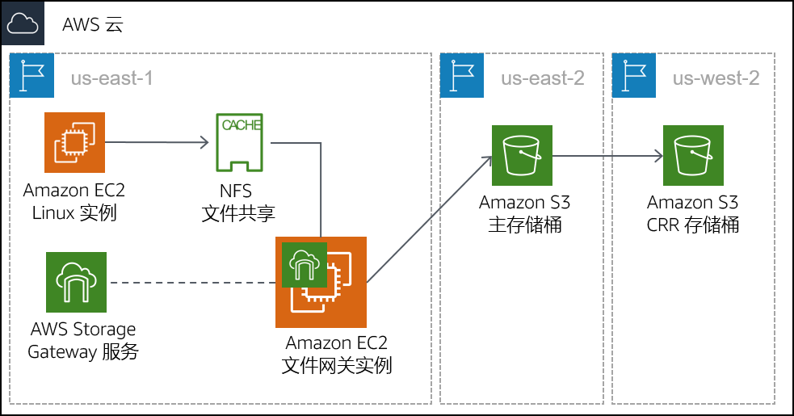

模块 14 – 指导实验：使用 AWS Storage Gateway 文件网关进行混合存储和数据迁移
实验概览和目标
在本实验中，您将使用 AWS Storage Gateway 文件网关服务将网络文件系统 (NFS) 挂载附加到本地数据存储。然后，将该数据复制到 AWS 中的 S3 存储桶。此外，您还将配置高级 Amazon S3 功能，例如 Amazon S3 生命周期策略和跨区域复制。
完成本实验后，您应能够：
- 使用 NFS 文件共享配置文件网关并将其附加到 Linux 实例
- 将一组数据从 Linux 实例迁移到 S3 存储桶
- 创建和配置主 S3 存储桶以将本地服务器数据迁移到 AWS
- 创建和配置用于跨区域复制的辅助 S3 存储桶
- 创建 S3 生命周期策略以自动管理存储桶中的数据
持续时间
完成本实验大约需要 90 分钟。
AWS 服务限制
在本实验环境中，对 AWS 服务和服务操作的访问可能仅限于完成实验说明所需的服务和服务操作。如果您尝试访问其他服务或执行本实验中所述之外的操作，可能会遇到错误。
访问 AWS 管理控制台
在这些说明的顶部，选择 Start Lab（启动实验）即可启动您的实验。
Start Lab（启动实验）面板随即会打开，其中显示了实验状态。
提示：如果您需要更多时间来完成实验，请再次选择 Start Lab（启动实验）按钮，重新启动环境计时器。
请耐心等待，直到 Start Lab（启动实验）面板显示消息 Lab status: ready（实验状态：就绪），然后选择 X 关闭此面板。
在这些说明的顶部，选择 AWS。
此操作将在一个新的浏览器选项卡中打开 AWS 管理控制台。您将自动登录系统。
提示：如果未打开新的浏览器选项卡，您的浏览器顶部通常会出现一个横幅或图标，并显示一条消息，指明您的浏览器阻止该了网站打开弹出窗口。请选择横幅或图标，然后选择 Allow pop-ups（允许弹出窗口）。
排列 AWS 管理控制台选项卡，使其与这些说明一起显示。理想情况下，您将同时打开两个浏览器选项卡，以便能够更轻松地执行实验步骤。
除非特别要求，否则请勿更改区域。
任务 1：查看实验架构
此实验环境总共使用三个 AWS 区域。模拟本地服务器的 Linux EC2 实例部署到 us-east-1（弗吉尼亚北部）区域。Storage Gateway 虚拟设备部署到与 Linux 服务器相同的区域。在实际场景中，设备将部署在 VMware vSphere 或 Microsoft Hyper-V 环境中，或作为物理 Storage Gateway 设备进行部署。
主 S3 存储桶是在 us-east-2（俄亥俄）区域创建的。来自 Linux 主机的数据将复制到主 S3 存储桶。此存储桶也可以称为源。
辅助 S3 存储桶是在 us-west-2（俄勒冈）区域创建的。此辅助存储桶是跨区域复制策略的目标。也可以称之为目标。

任务 2：创建主 S3 存储桶和辅助 S3 存储桶
在配置文件网关之前，您必须创建将从其复制数据的主 S3 存储桶（或源）。您还将创建将用于跨区域复制的辅助存储桶（或目标）。
- 在 AWS Management Console（AWS 管理控制台）的 Services（服务）菜单上，选择 S3。
- 选择 Create bucket（创建存储桶），然后配置以下设置：
- Bucket name（存储桶名称）：创建一个可以轻松记住的名称。该名称必须是全球独一无二的。
- Region（区域）：US East (Ohio)（美国东部（俄亥俄））
选择 Create bucket（创建存储桶）
单击您创建的存储桶，然后单击 Properties（属性）选项卡。
在 Bucket Versioning（存储桶版本控制）下，单击Edit（编辑），选择 Enable（启用），然后单击 Save changes（保存更改）。
要进行跨区域复制，必须为源存储桶和目标存储桶启用版本控制。
重复此任务中前面的步骤，使用以下配置创建第二个存储桶：
- Bucket name（存储桶名称）：创建一个可以轻松记住的名称。该名称必须是全球独一无二的。
- Region（区域）：US West (Oregon)（美国西部（俄勒冈））
- Bucket Versioning（版本控制）：Enabled（已启用）
任务 3：启用跨区域复制
您已经创建了两个 S3 存储桶并对它们启用了版本控制，现在可以创建复制策略。
- 选择您在美国东部（俄亥俄）区域创建的源存储桶的名称。
- 选择 Management（管理）选项卡，然后选择 Replication（复制规则）
- 选择 Create replication rule（创建复制规则），然后配置以下设置：
Replication rule name（复制规则名称）：crr-full-bucket
Source bucket：This rule applies to all objects in the bucket（源存储桶：此规则将应用于存储桶中的所有对象）
Destination（目标）：
- Choose a bucket in this account（在此账户中选择一个存储桶）
- 选择您在美国西部（俄勒冈）区域创建的存储桶。您可能需要向下滚动才能看到此存储桶。
IAM role（IAM 角色）：S3-CRR-Role
- 注意：要查找 AWS Identity and Access Management (IAM) 角色，请在搜索框中输入
S3-CRR（此角色是使用本实验所需的权限预先创建的）
- 注意：要查找 AWS Identity and Access Management (IAM) 角色，请在搜索框中输入
- 检查您的设置，然后选择 Save（保存）
注意：如果显示消息 The replication rule is saved, but it might not work（复制规则已保存，但它可能不起作用），可以忽略此消息并继续下一步操作。
- 返回到您在美国东部（俄亥俄）区域创建的存储桶。
- 将本地计算机上的文件上传到此存储桶。
对于本实验，请使用不包含敏感信息的小型文件，例如空白文本文件。
- 等待文件上传完成，然后返回到您在美国西部（俄勒冈）区域创建的存储桶。您上传的文件也应复制到此存储桶中。
注意：您可能需要选择窗口右上角区域中的刷新 按钮。
任务 4：配置文件网关并创建 NFS 文件共享
在此任务中，您需要将文件网关设备部署为 Amazon Elastic Compute Cloud (Amazon EC2) 实例。然后，您将配置缓存磁盘，选择要将本地文件同步到的 S3 存储桶，然后选择要使用的 IAM 策略。最后，您将在文件网关上创建 NFS 文件共享。
- 在左上角，选择 Services（服务）菜单，然后选择 Storage Gateway（存储网关）。
您还可以从 Services（服务）菜单顶部搜索 Storage Gateway（存储网关），以便更轻松地进行查找。
- 在控制台的右上角，验证当前区域是否为 N. Virginia（弗吉尼亚北部）。
系统应提示您使用 AWS Storage Gateway 入门页面。显示此页面是因为尚未在此区域中配置 Storage Gateway 服务。
- 选择 Get started（开始使用）
如果没有看到入门页面，请选择 Create gateway（创建网关）
- 选择 File gateway（文件网关），然后选择 Next（下一步）
- 选择 Amazon EC2，然后选择 Launch instance（启动实例）按钮。
系统将打开一个新的 EC2 实例启动向导选项卡。此链接会自动选择必须用于文件网关设备的正确 Amazon 系统映像 (AMI)。
- 选择 t2.xlarge 实例类型，然后选择 Next: Configure Instance Details（下一步：配置实例详细信息）
注意：t2.xlarge 是您可以在此实验环境中选择的唯一实例类型。如果选择任何其他实例类型，将在向导结束时出现错误消息。
t2.xlarge 实例类型仅用作本实验中的示例。有关在部署 Storage Gateway 设备时正确设置设备大小的信息，请参阅 Storage Gateway 文档。
- 在 Configure instance details（配置实例详细信息）屏幕上，配置以下设置：
Number of instances（实例的数量）：
1Network（网络）：On-Prem-VPC
Subnet（子网）：On-Prem-Subnet
Auto-assign Public IP（自动分配公有 IP）：Use subnet setting (Enable)（使用子网设置（启用））
接受其余选项的默认值
注意：您可以忽略警告消息，例如：You do not have permissions to list instance profiles. Contact your administrator, or check your IAM permissions.（您没有列出实例配置文件的权限。请联系您的管理员，或检查您的 IAM 权限。）
- 选择 Next: Add Storage（下一步：添加存储）
- 选择 Add New Volume（添加新卷），然后配置以下设置：
- Volume Type（卷类型）：EBS
- Device（设备）：/dev/sdb
- Size (GiB)（大小 (GiB)）：
150 - Volume Type（卷类型）：General Purpose SSD (gp2)（通用型 SSD (gp2)）
- Delete on Termination（终止时删除）：
- 选择 Next: Add Tags（下一步：添加标签）
- 选择 Add Tag（添加标签）并进行以下配置：
- Key（键）：
Name - Value（值）：
File Gateway Appliance - Instances（实例）：
- Volumes（卷）：
注意：标签区分大小写。
- 选择 Next: Configure Security Group（下一步：配置安全组）
- 选择 Select an existing security group（选择一个现有的安全组），然后选择：
File Gateway activation and NFS access ports（文件网关激活和 NFS 访问端口）
此安全组被配置为允许通过端口 80 (HTTP)、443 (HTTPS)、53 (DNS)、123 (NTP) 和 2049 (NFS) 传输的流量。这些端口可启用文件网关设备的激活。它们还允许从 Linux 服务器连接到您将在文件网关上创建的 NFS 共享。
有关 Storage Gateway 使用的端口的其他信息，请参阅 Storage Gateway 文档。
On-Prem SSH Access（本地 SSH 访问）
- 此安全组配置为允许端口 22 上的安全外壳 (SSH) 连接。

- 选择 Review and Launch（审核和启动）
注意：您将在下一个屏幕顶部看到警告消息。您可以放心地忽略本实验室中出现的这些警告。为了防止在生产环境中与您的实例进行不必要的或恶意的连接，您应始终创建限制性尽可能严格的安全组。
- 选择 Launch（启动）
- 在 Select an existing key pair or create a new key pair（选择现有密钥对或创建新密钥对）屏幕上，配置以下设置：
- 选择现有密钥对
- Select a key pair（选择密钥对）：Choose an existing key pair（选择现有密钥对）
- I acknowledge that I have access to the selected private key file...（我确认我有权访问所选的私钥文件...）
注意：此密钥对在本实验的 Details > Show > Credentials（详细信息 > 显示 > 凭证）页面上提供。
- 选择 Launch Instances（启动新实例）
- 选择 View Instances（查看实例）
您的文件网关设备实例应需要几分钟的时间才能部署完成。
- 监视部署状态并等待状态检查完成。
注意：您可能需要选择窗口右上角区域中的刷新 按钮。
- 从列表中选择您的文件网关实例，然后在屏幕底部找到 IPv4 公有 IP 地址并进行复制。完成文件网关部署时，您将使用此 IP 地址。
- 返回浏览器中的 AWS Storage Gateway 标签页。它应该仍然在 Select host platform（选择主机平台）屏幕上。
- 验证是否选择了 Amazon EC2，然后选择 Next（下一步）
- 对于终端节点类型，请选择 Public（公有），然后选择 Next（下一步）
- 粘贴从文件网关设备实例复制的 IPv4 公有 IP 地址，然后选择 Connect to gateway（连接到网关）
- 在 Activate gateway（激活网关）屏幕上，配置以下设置：
- Gateway time zone（网关时区）：GMT 5:00 Eastern Time (US & Canada)（GMT – 东部时间 5:00（美国和加拿大））
- Gateway name（网关名称）：
File Gateway
- 选择 Activate gateway（激活网关）
- 在 Configure local disks（配置本地磁盘）屏幕上，等待 Preparing local disks（准备本地磁盘）状态显示已处理完成（约 1 分钟）。
- 处理完成后，转到 Allocated to（分配给），然后选择 Cache（缓存）。
- 选择 Configure logging（配置日志记录）
- 在 Gateway health log group（网关运行状况日志组）屏幕上，转到 Gateway health log group（网关运行状况日志组），然后选择 Disable logging（禁用日志记录）。
- 选择 Save and continue（保存并继续）
- 等待文件网关状态更改为 Running（正在运行）（大约 1-2 分钟），然后选择 File Gateway（文件网关）条目并选择 Create file share（创建文件共享）
- 在 Configure file share settings（配置文件共享设置）屏幕上，配置以下设置：
- Amazon S3 bucket name（Amazon S3 存储桶名称）：输入您在任务 1 中在美国东部（俄亥俄）区域创建的源存储桶的名称。
- Access objects using（使用以下工具访问对象）：Network File System (NFS)（网络文件系统 (NFS)）
- Gateway（网关）：选择刚创建的文件网关的名称（应该是 File Gateway（文件网关）
- Source bucket: This rule applies to all objects in the bucket（源存储桶：此规则将应用于存储桶中的所有对象）
- 在 Configure how files are stored in Amazon S3（配置文件在 Amazon S3 中的存储方式）屏幕上，配置以下设置：
Storage class for new objects（新对象的存储类）：S3 Standard（S3 标准）
Object metadata（对象元数据）：
- Guess MIME type（猜测 MIME 类型）
- Give bucket owner full control（给予存储桶拥有者完全控制权限）
- Enable Requester Pays（启用申请方付款）
Access your S3 bucket（访问 S3 存储桶）：Use an existing IAM role（使用现有 IAM 角色）
IAM role（IAM 角色）：粘贴 FgwIamPolicyARN，您可以按照以下说明进行检索 –
- 选择这些说明上方的 Details（详细信息）下拉菜单
- 选择 Show（显示）
- 复制 FgwIamPolicyARN 值
- Source bucket: This rule applies to all objects in the bucket（源存储桶：此规则将应用于存储桶中的所有对象）
注意：您可能会收到一条警告消息，说明可以从任何位置访问文件共享。对于本实验，您可以放心地忽略此警告。在生产环境中，您应始终创建限制性尽可能严格的策略，以防止与您的实例进行不必要的或恶意的连接。
- 选择 Create file share（创建文件共享）
- 监视部署状态，等待状态变为 Available（可用），这需要不到一分钟的时间。
注意：您可能需要选择窗口右上角区域中的刷新 按钮。
- 选择刚创建的文件共享。在屏幕底部，记下用于在 Linux 上挂载文件共享的命令。您在完成下一个任务时需要使用此命令。

任务 5：将文件共享挂载到 Linux 实例并迁移数据
必须先挂载您创建的 NFS 共享，然后才能将数据迁移到此共享。在此任务中，您将在 Linux 服务器上挂载此 NFS 共享，然后将数据复制到该共享。
- 连接到本地 Linux 服务器实例。
Microsoft Windows 用户
这些说明仅适用于 Microsoft Windows 用户。如果您使用的是 macOS 或 Linux，请跳至下一部分。
- 在您当前读取的这些说明上方，选择 Details（详细信息）下拉菜单，然后选择 Show（显示）
系统将打开一个 Credentials（凭证）窗口。
- 选择 Download PPK（下载 PPK）按钮并保存 labsuser.ppk 文件。
注意：通常情况下，您的浏览器会将文件保存到 Downloads（下载）目录。
- 记下 OnPremLinuxInstance 地址（如果显示）。
- 通过选择 X 退出 Details（详细信息）面板。
- 要使用 SSH 访问 EC2 实例，您必须使用 PuTTY。如果计算机上未安装 PuTTY，下载 PuTTY。
- 打开 putty.exe。
- 要使 PuTTY 会话在更长时间内保持打开状态，请配置 PuTTY 超时：
- 选择 Connection（连接）
- Seconds between keepalives（keepalive 之间的秒数）：
30
- 使用以下设置配置您的 PuTTY 会话。
选择 Session（会话）
Host Name (or IP address)（主机名（或 IP 地址））：粘贴您之前记下的实例的 OnPremLinuxInstance
- 或者，返回 Amazon EC2 控制台，并选择 Instances（实例）
- 选择要连接到的实例
- 在 Description（描述）选项卡中，复制 IPv4 Public IP（IPv4 公有 IP）的值
返回 PuTTY，在 Connection（连接）列表中，展开 SSH
选择 Auth（身份验证）（但不要展开）
选择 Browse（浏览）
找到并选择已下载的 labsuser.ppk 文件
要选择此文件，请选择 Open（打开）
再次选择 Open（打开）
- 要信任并连接到主机，请选择 Yes（是）。
- 在系统提示 login as（登录身份）时，输入：
ec2-user
此操作会将您连接到 EC2 实例。
- Microsoft Windows 用户：单击此处向前跳至下一个任务。
macOS 和 Linux 用户
这些说明仅适用于 macOS 或 Linux 用户。如果您是 Windows 用户，请向前跳至下一个任务。
- 在您当前读取的这些说明上方，选择 Details（详细信息）下拉菜单，然后选择 Show（显示）。
系统将打开一个 Credentials（凭证）窗口。
选择 Download PEM（下载 PEM）按钮并保存 labsuser.pem 文件。
记下 OnPremLinuxInstance 地址（如果显示）。
通过选择 X 退出 Details（详细信息）面板。
打开一个终端窗口，并将目录更改为使用
cd命令下载的 labsuser.pem 文件所在的目录。例如，如果将 labsuser.pem 文件保存到了您的 Downloads（下载）目录，请运行以下命令：
cd ~/Downloads通过运行以下命令，将密钥的权限更改为只读：
chmod 400 labsuser.pem运行以下命令（将 <public-ip> 替换为您之前复制的 OnPremLinuxInstance 地址）。
- 或者，要查找本地实例的 IP 地址，请返回到 Amazon EC2 控制台并选择 Instances（实例）
- 选择要连接到的实例
- 在 Description（描述）选项卡中，复制 IPv4 Public IP（IPv4 公有 IP）的值
ssh -i labsuser.pem ec2-user@<public-ip>在系统提示允许首次连接此远程 SSH 服务器时，输入：
yes（是）。由于您使用密钥对进行身份验证，因此系统不会提示您输入密码。
现在，您应该已连接到此实例。
在 Linux 实例上，要查看此服务器上存在的数据，请输入以下命令：
ls /media/data您应该看到 20 个 .png 格式的图像文件。
使用以下命令创建用于将数据与 S3 存储桶同步的目录：
sudo mkdir -p /mnt/nfs/s3使用在上一个任务结束时复制的命令在 Linux 实例上挂载此文件共享。
sudo mount -t nfs -o nolock,hard <File-Gateway-appliance-private-IP-address>:/<S3-bucket-name> /mnt/nfs/s3例如：
sudo mount -t nfs -o nolock,hard 10.10.1.33:/lab-nfs-bucket /mnt/nfs/s3通过输入以下命令验证共享是否已正确挂载：
df -h此命令的输出应类似以下示例：
[ec2-user@ip-10-10-1-210 ~]$ df -hFilesystem Size Used Avail Use% Mounted ondevtmpfs 483M 64K 483M 1% /devtmpfs 493M 0 493M 0% /dev/shm/dev/xvda1 7.8G 1.1G 6.6G 14% /10.10.1.33:/lab-nfs-bucket 8.0E 0 8.0E 0% /mnt/nfs/s3现在您已经创建了挂载点，可以使用以下命令将要迁移到 Amazon S3 的数据复制到共享中：
cp -v /media/data/*.png /mnt/nfs/s3
任务 6：验证数据是否已迁移
您已完成网关配置并将数据复制到 NFS 共享中。现在，您将验证配置是否按预期运行。
- 选择 Services（服务）菜单，然后选择 S3。
- 选择您在美国东部（俄亥俄）区域创建的存储桶，然后验证是否列出了 20 个映像文件。
注意：您可能需要选择窗口右上角区域中的刷新 按钮。
- 返回 S3 buckets（S3 存储桶）页面，然后选择您在美国西部（俄勒冈）区域创建的存储桶。根据您之前创建的策略，验证映像文件是否已复制到此存储桶。
您已通过在文件网关模式下使用 AWS Storage Gateway，成功地将数据迁移到 Amazon S3！将数据存储在 Amazon S3 中后，您可以像本机 Amazon S3 数据一样对其进行操作。在本实验中，您创建了一个复制策略以将数据复制到辅助区域。您还可以执行其他操作，例如配置生命周期策略。例如，您可以将不常使用的数据自动从 S3 标准迁移到 Amazon Simple Storage Service Glacier 进行长期存储，从而降低成本。
提交作业
在这些说明的顶部，选择 Submit（提交）记录您的进度，在出现提示时，选择 Yes（是）。
如果在几分钟后仍未显示结果，请返回到这些说明的顶部，并选择 Grades（成绩）
提示：您可以多次提交作业。更改作业后，再次选择 Submit（提交）即可。您最后一次提交的作业将记录为本实验的成绩。
要查找有关您作业的详细反馈，请选择 Details（详细信息），然后选择 View Submission Report（查看提交报告）。
实验已完成
恭喜！您已完成本实验。
选择此页面顶部的 End Lab（结束实验），然后选择 Yes（是）确认您要结束实验。
此时应显示一个面板，并显示消息：DELETE has been initiated... You may close this message box now.（删除操作已启动...您现在可以关闭此消息框。）
选择右上角的 X 以关闭面板。
©2020 Amazon Web Services, Inc. 及其附属公司。保留所有权利。未经 Amazon Web Services, Inc. 事先书面许可，不得复制或转载本文的部分或全部内容。禁止商业性复制、出租或出售。